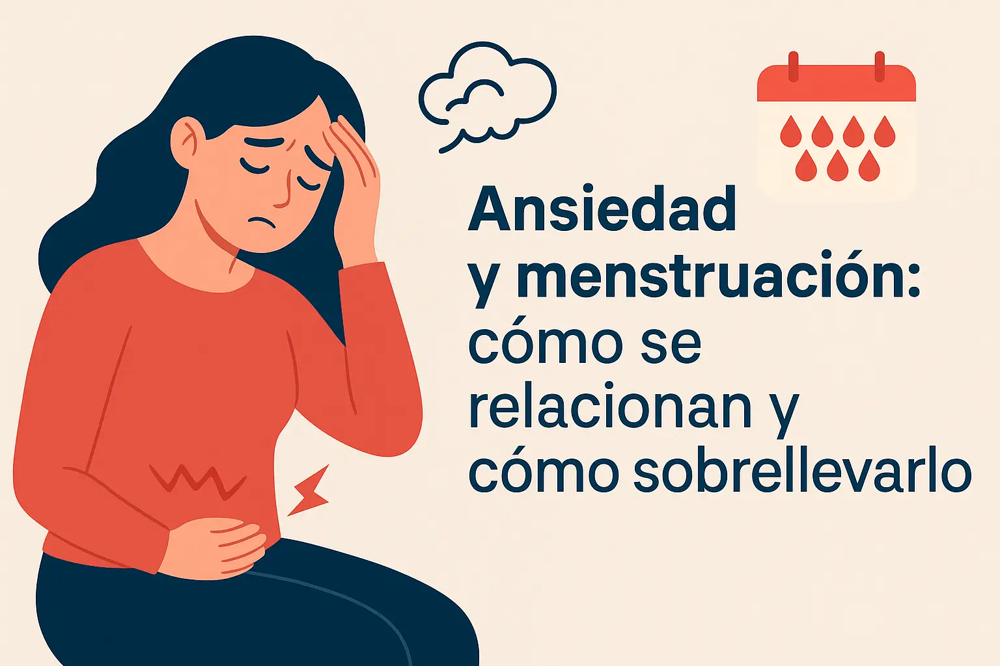
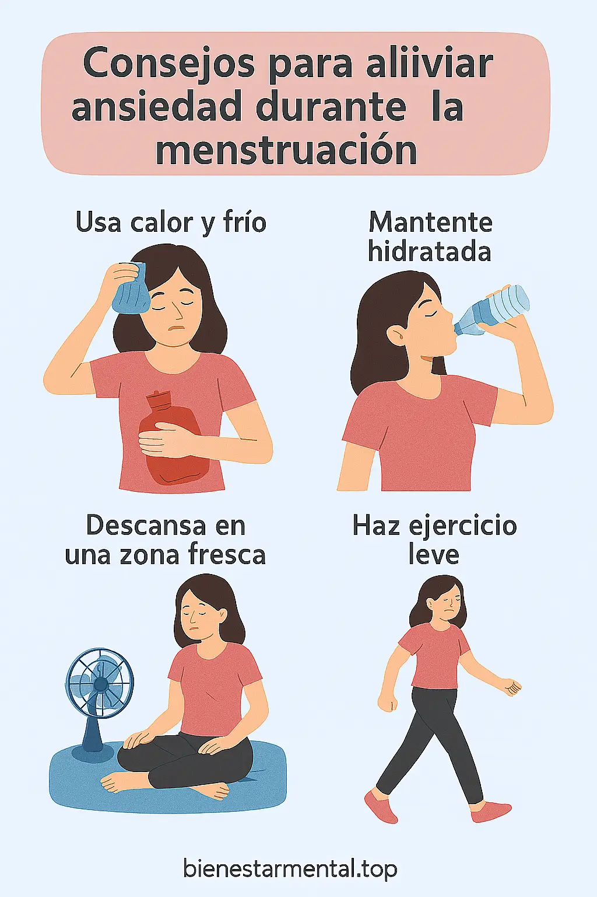

Ansiedad y menstruación: cómo se relacionan y cómo sobrellevarlo
La ansiedad durante la menstruación es una realidad para muchas personas. Aunque a menudo se pasa por alto, el ciclo menstrual puede intensificar los síntomas emocionales y físicos, especialmente en los días previos a la regla. En este artículo, exploramos cómo se relacionan y qué puedes hacer para sobrellevar esos días más fácilmente.
¿Por qué se agrava la ansiedad durante la menstruación?
Durante la fase lútea (los días previos a la menstruación), los niveles hormonales de estrógeno y progesterona bajan bruscamente. Este desequilibrio afecta la serotonina, una sustancia clave para el estado de ánimo. Como resultado, puedes sentir:
- Desrealización o desconexión
- Mayor sensibilidad emocional
- Síntomas físicos como mareos, diarrea, o dolor abdominal más intenso
- Incluso ataques de pánico
Testimonios reales: lo que sienten muchas mujeres
Según muchos testimonios en redes como TikTok, y lo que algunas personas comparten, los ataques de pánico o síntomas intensos de ansiedad muchas veces coinciden justo antes de que comience el sangrado menstrual.
“Me da un ataque de ansiedad y al día siguiente me baja la regla. Ya sé que cuando siento eso, es porque se acerca.”
Trucos para sobrellevarlo mejor
Estos consejos han sido compartidos por personas reales que buscan formas naturales y respetuosas de cuidarse durante esos días:
- ❄️ Ponerse hielo en la frente o cuello para aliviar la sensación de desrealización
- 🔥 Aplicar calor en la barriga (almohadilla térmica o manta eléctrica)
- 💧 Beber mucha agua para combatir deshidratación y diarrea
- 🥔 Comer hidratos y hierro (arroz, lentejas, pan integral)
- 😴 Descansar lo más posible, especialmente los primeros días
- 🌀 Evitar el sol fuerte y buscar zonas frescas
- 🚶 Moverse sin forzarse: estiramientos, caminar suave, yoga ligero
Otras herramientas que te ayudan
- Usa un journal emocional para expresar cómo te sientes
- Técnicas de respiración que alivian en momentos críticos
- Prácticas de autocuidado adaptadas a tu ciclo
- Evita el sobrepensamiento con ejercicios mentales
- Calma tu mente en 60 segundos si te sientes abrumada
¿Cuándo pedir ayuda profesional?
Si los síntomas de ansiedad premenstrual te impiden hacer tu vida con normalidad o te generan malestar constante, es recomendable consultar con un profesional. El trastorno disfórico premenstrual (TDPM) es una condición real que puede tratarse.